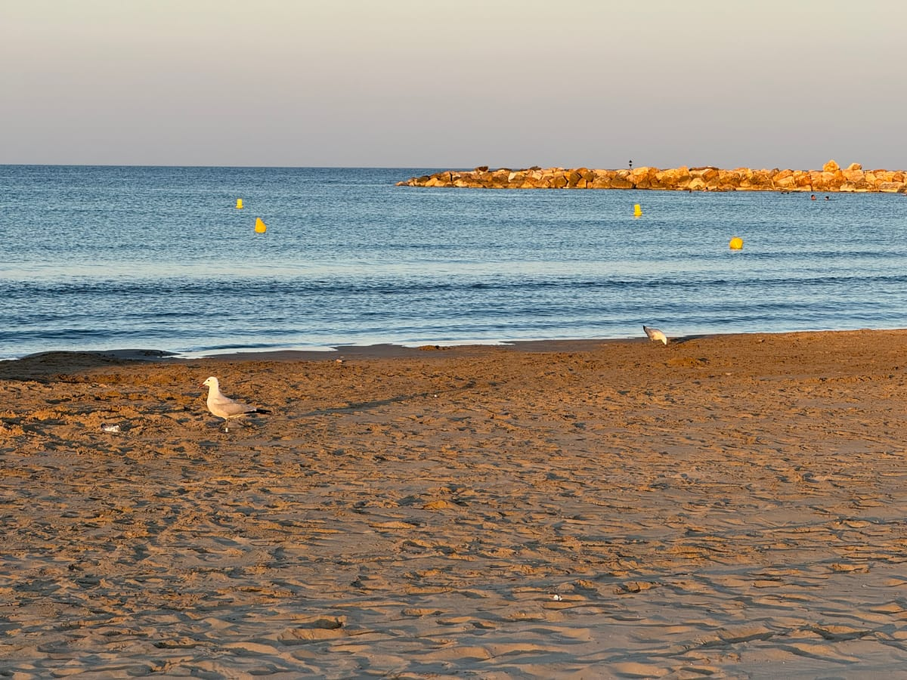
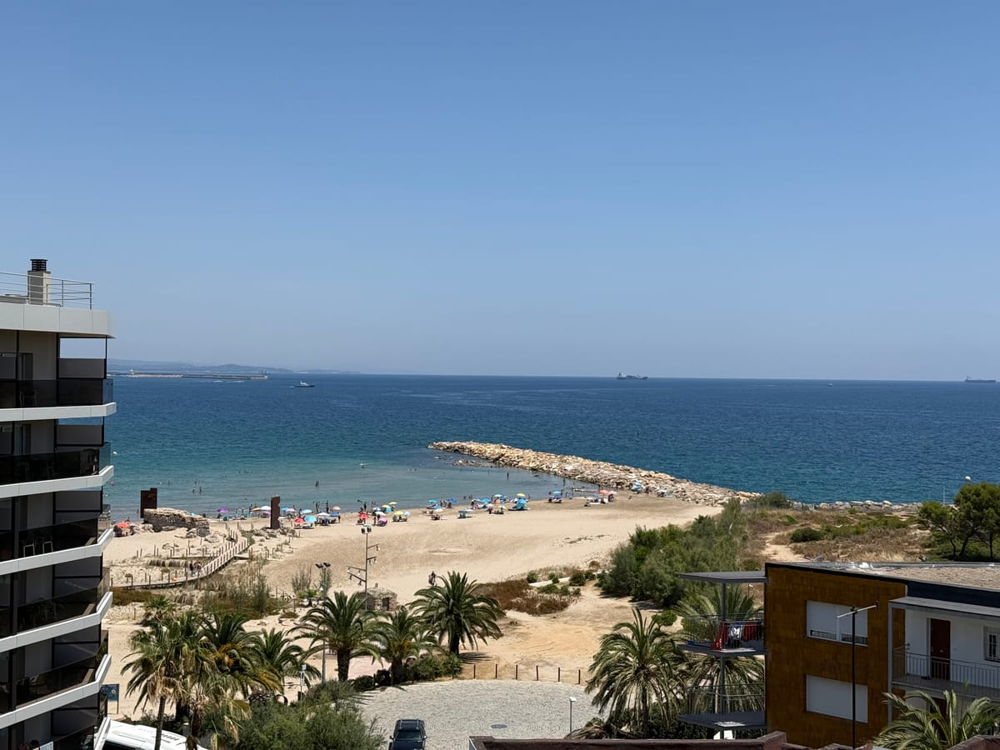
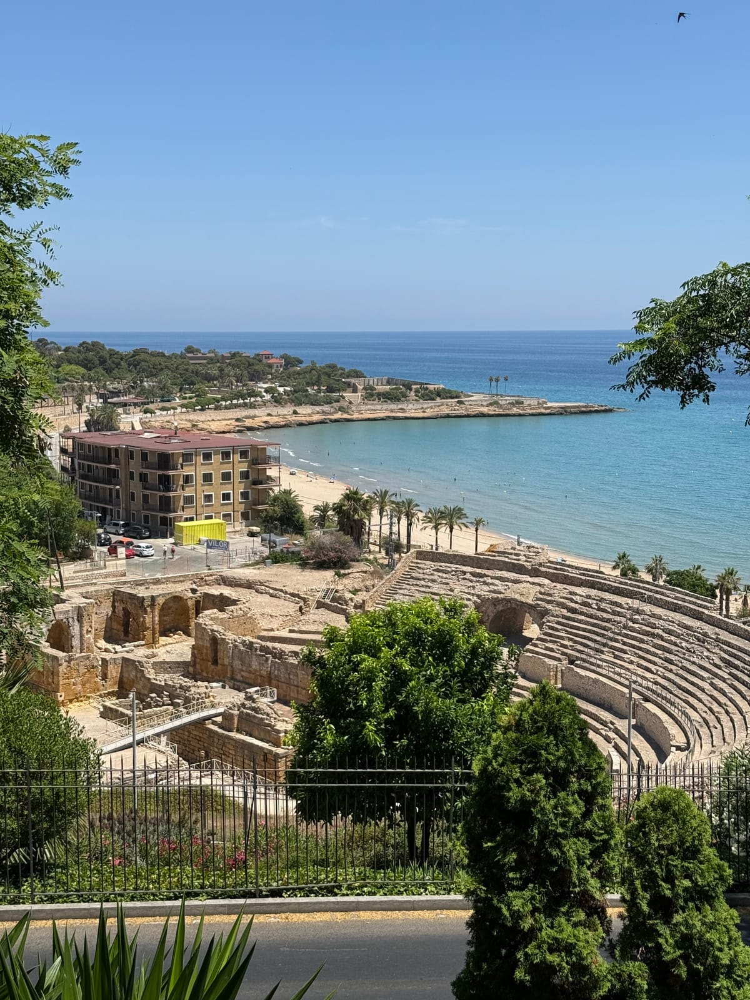

00 · night arrival
The Flight
We land just in time to watch the last bus leave. A night taxi down the coast instead — asleep in La Pineda by midnight.
a road movie for two · 25 june — 8 july 2026
La Pineda → Narbonne → Carcassonne → Barcelona
scroll to set off
↓
00 · night arrival
We land just in time to watch the last bus leave. A night taxi down the coast instead — asleep in La Pineda by midnight.
01 · the start
Night taxi from El Prat, down the coast — we missed the last bus.
Five slow days on the Costa Daurada: golden sand, a shallow warm sea, the long promenade and unhurried breakfasts. Day trips out — Roman Tarragona on the 26th, seaside Salou on the 27th.



02 · crossing the border
Bus to Tarragona, bus to Camp de Tarragona, then a high-speed train across the border into France.
Two days in Rome's first colony in Gaul. The Canal de la Robine, croissants under the iron roof of Les Halles, and the Via Domitia — an ancient Roman road bared in the middle of the main square.
03 · the middle ages
Thirty minutes by local train from Narbonne.
Two days between the lower town and the medieval Cité — 52 towers and a double ring of walls above the Aude. On the 2nd, a concert inside the fortress itself: Clair Obscur: Expedition 33 — A Painted Symphony.
04 · the finale
Bus back over the mountains, then the metro out to Badalona.
Five days based in Badalona, wandering Barcelona on foot: Park Güell, the Sagrada Família, Plaça de Catalunya and the old streets. The aquarium and the waterfront, Ciutadella park — and quiet evenings on Badalona's own beach.
credits
La Pineda · Narbonne · Carcassonne · Barcelona
25.06 → 08.07 · shot & directed by the two of us